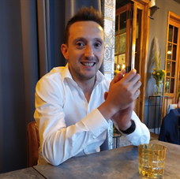

Welkom op mijn portfolio! Hier vind je meer over mijn vaardigheden, ervaringen en projecten.
Over Mij

Hallo! Mijn naam is Tim Vanberghen. Ik ben een student met een passie voor technologie en innovatie. Hier vind je meer over mijn professionele en persoonlijke interesses.
In mijn vrije tijd geniet ik van veldvoetbal en hardlopen. Deze hobby's helpen me fit en gefocust te blijven, zowel fysiek als mentaal.
Hard Skills
IOT★★★☆☆
CCNA★★★☆☆
Linux★★★☆☆
Windows★★★☆☆
Windows server (soho)★★★☆☆
Python★★★☆☆
Docker★★★☆☆
Soft Skills
Leiding geven ★★★★☆
Verantwoordelijkheid ★★★★★
Administratief werk ★★★★☆
Mensen motiveren ★★★★★
Professioneel handelen ★★★★☆
Talenkennis
Nederlands★★★★★
Engels★★★★☆
Frans★★☆☆☆
Praktische Ervaring
Ik heb mijn vaardigheden toegepast in diverse onderwijs- en werkgerelateerde projecten. Hier zijn enkele voorbeelden:
Service technieker (nov. 2022 - mei 2023, Roeselare, Aleris)
Onderhoud en in bedrijf stellen van brandcentrales, alarmsystemen...
Assistent-teamleader (jan. 2018 - nov. 2022, Oevel, Toro)
Mensen aansturen (+12 personen), planning opmaken voor werknemers, transport van zendingen regelen, stock op orde houden en transacties in SAP beheren.
Software developer/testing (okt. 2024 - dec. 2024, Genk, Brightest (Gumption))
Tijdens mijn stage bij Brightest ontwikkelde ik een project waarin ik een embedded Linux-omgeving simuleerde met Docker. Ik implementeerde een sensor die data via MQTT naar een Mosquitto-broker stuurde, data opsloeg in een MySQL-database, en visualiseerde in Grafana. Door test-driven development (TDD) in Python te gebruiken, waarborgde ik de betrouwbaarheid en kwaliteit van de code.
Referenties zijn op verzoek beschikbaar.
Contact
Wil je met mij in contact komen? Hier zijn mijn gegevens: